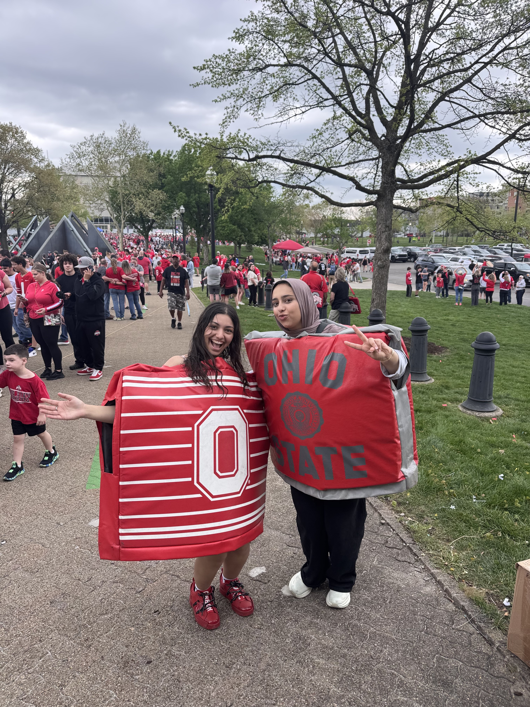
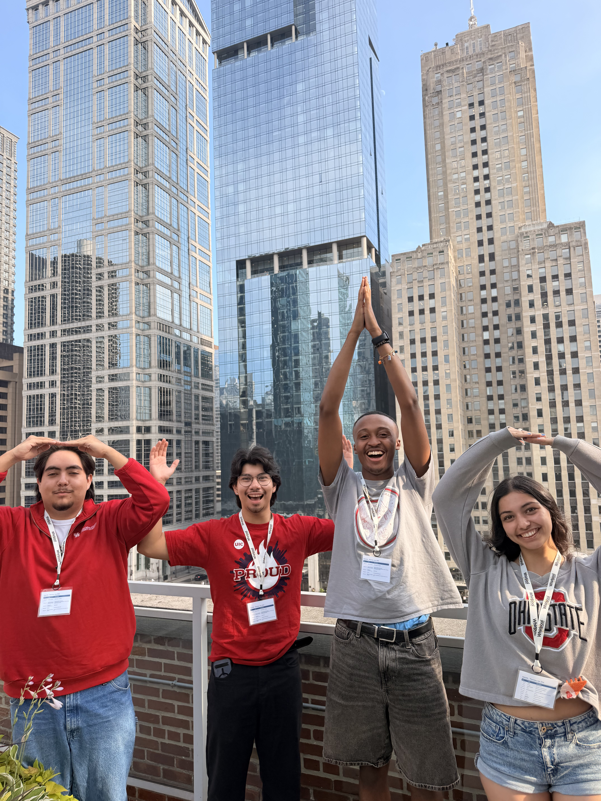
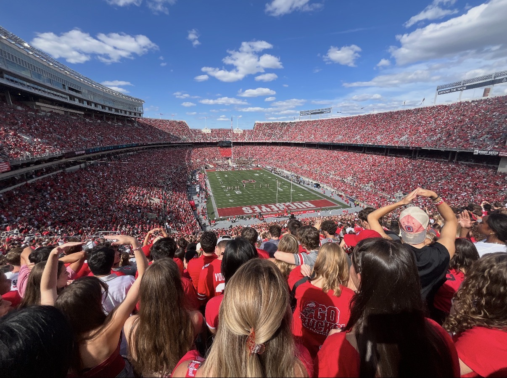
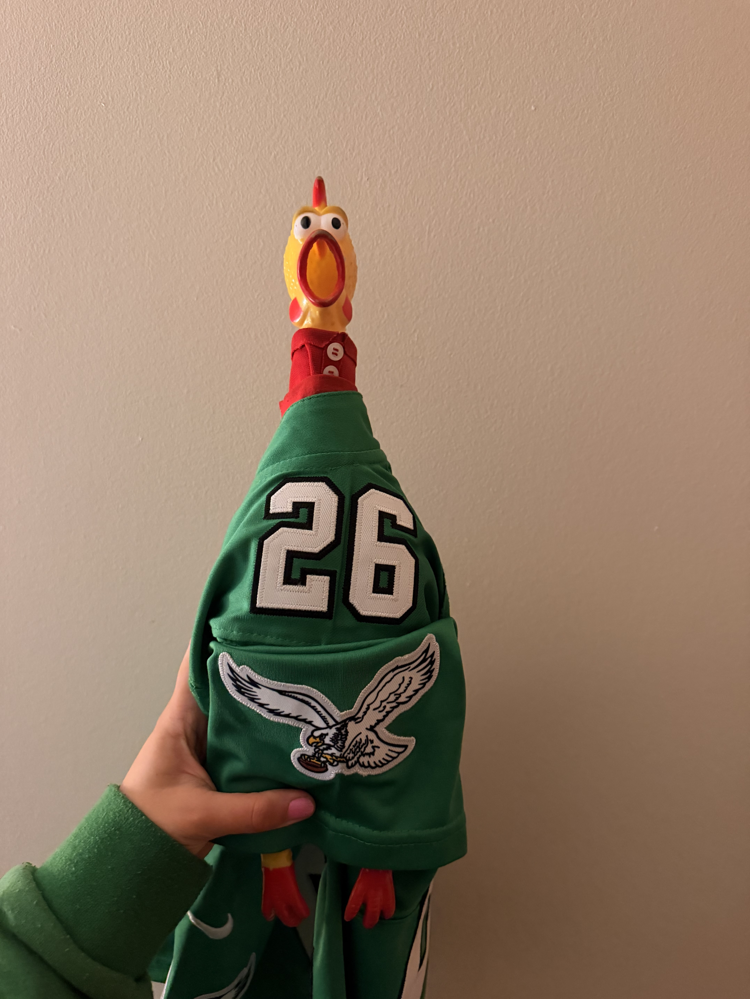

I am ready to become an active member of Ohio Staters because I want to make a difference in the everyday lives of students. Nothing is more fulfilling to me than alleviating even a small part of someone’s stress or giving them a reason to smile. I care deeply about the community around me and the university that will shape my degree. When Ohio State becomes a better place to learn and belong, the value of our education grows for all of us.
I have learned that one of my strengths as a leader is building a culture where people feel included and want to support one another. I brought that approach to my tennis team, and I hope to bring it to Staters through my work with Little Free Libraries, the Block O Statue, and the three suggestions I have developed. I am excited to listen to students, work alongside other members, and turn thoughtful ideas into projects that people can feel.
Staters has also become a safe space for me. College has brought difficult moments, and this organization has given me a place to channel those experiences into something positive. Being part of Staters reminds me that even when I cannot change everything going on in my own life, I can still help make someone else’s day better. I am ready to take on the responsibility of active membership and continue showing up for the community that has given me so much.